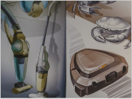
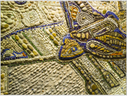
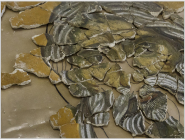
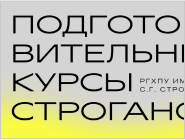
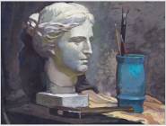

Подразделения
-
Факультет дизайна
Факультет дизайна Университета им. С.Г. Строганова является преемником факультета «Промышленное искусство», который объединял в 1960-1980-е годы такие направления подготовки и кафедры как художественное конструирование, художественный металл, промграфика и упаковка. Руководил факультетом в течении многих десятилетий архитектор и дизайнер профессор А.Е. Короткевич....
 -
Факультет МДиДПИ
Факультет монументально-декоративного и декоративно-прикладного искусства включает в себя 7 выпускающих кафедр, ведущих подготовку специалистов, бакалавров и магистров для отдельных видов искусства: кафедру монументально-декоративной живописи, кафедру монументально-декоративной скульптуры, кафедру художественного проектирования интерьеров, кафедру искусства графики, кафедру художественного стекла, кафедру художественного металла, кафедру худ...
 -
Факультет искусства реставрации
Факультет искусства реставрации один из самых молодых в Университете, он объединяет кафедры, которые готовят специалистов в таких областях как реставрация монументально-декоративной живописи, художественная реставрация мебели, реставрация художественного металла, стекла и керамики. Поскольку любая реставрация начинается с изучения реставрируемого предмета, не только его технологических характеристик, но и его истории, к факультету искусства рестав...
 -

-
Кафедра академического рисунка
После Великой Отечественной войны, в 1945 году, советское правительство приняло постановление восстановить Строгановское училище. В Московском высшем художественно – промышленном училище были основаны специализированные факультеты, кафедры и среди них – кафедра рисунка. Назначение кафедры состояло в обучение студентов умению грамотно и уверенно изображать окружающий мир графическими средствами, применять эти приобре...
-
Кафедра академической живописи
Основополагающая задача кафедры - преподавание живописи как метода проектной деятельности: студенты овладевают методами изобразительного языка академической живописи и приобретают навыки передачи цвета, колорита, тона (цветотона), воздушной перспективы, развивается образно-пространственное мышление; формируется художественный вкус и развивается чувства цвета, закладываются фундаментальные принципы построения композиции в формате, гармон...
